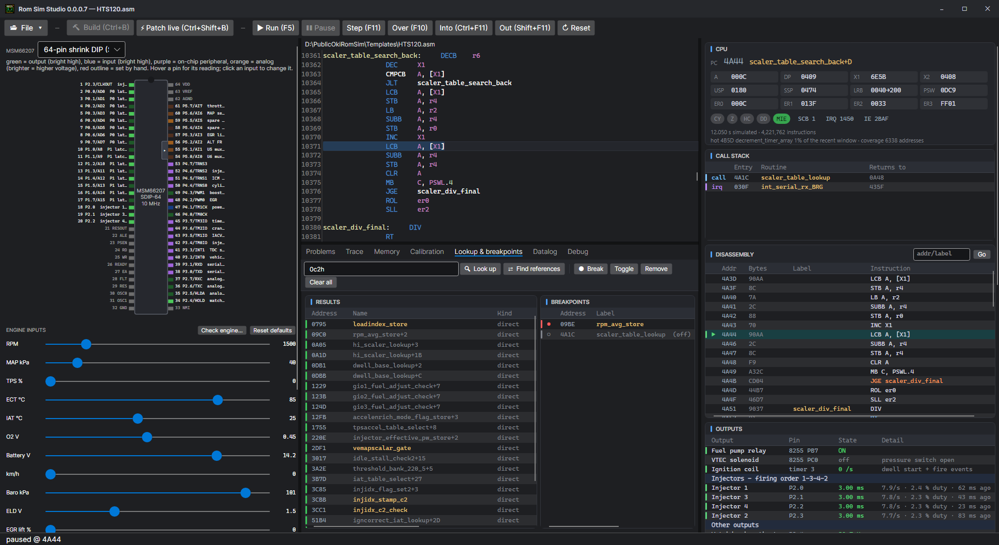

Running, stepping and breakpoints
Run the ROM against the simulated engine, stop it where you want, and walk through it an instruction at a time.
Run and pause
Run (F5) starts the simulated MSM66207 from where it is; F5 again pauses it. Reset (Ctrl+R) starts it again from power-up. The speed — 0.1×, 0.5×, real time, 4× or as fast as it goes — is in Settings > General > Simulation, with Fast boot, which skips the 4.5 s key-on sensor scan the ROM does before it starts the engine.
The simulation is cycle-counted at the real clock (a 10 MHz crystal, the CPU at 2.5 MHz, the timers at a quarter of that), so rpm, injector pulses and ignition timing come out as the ECU makes them.
Stepping
| Key | Button | Does |
|---|---|---|
| F11 | Step | One instruction. |
| F10 | Over | One instruction, running a call (CAL, VCAL) through to its return. |
| Ctrl+F11 | Into | Step into — and at a conditional jump, take it whatever the flags say, to walk down a path the engine is not on. |
| Shift+F11 | Out | Run until the routine (or interrupt handler) returns. |
The Call stack follows CAL, VCAL and interrupts, so Out and the stack are right even inside an interrupt. With Follow reads (Settings > General) a step that reads a table switches the Calibration page to it.
Breakpoints
A breakpoint pauses the simulator when the CPU is about to run the instruction it is on.
- F9 toggles one on the source line the caret is on.
- Double-click a line of the Disassembly to toggle one there.
- On Lookup & breakpoints, type a label or an address and press Break (or Toggle); or right-click an address or name in the lookup results and pick Add as breakpoint.
The Breakpoints list shows each one with ● when it is on and ○ when it is off. Right-click one to switch it off (it stays in the list and is not stopped at), switch it on again, or remove it. Clear all removes them all. Breakpoints, on and off, are saved with a project.
Lookup and references

Type a label, a calibration name or an address and press Enter: the results say what it is and where. Find references lists every instruction that reads or writes the address. Double-click a result to go to it.
Changing code while it runs
Edit the source, then Patch live (Ctrl+Shift+B): only the bytes that changed go into the running ROM, and the program carries on with the new code at once. If the CPU is inside code that moved, it asks whether to patch anyway, patch and reset, or leave it.